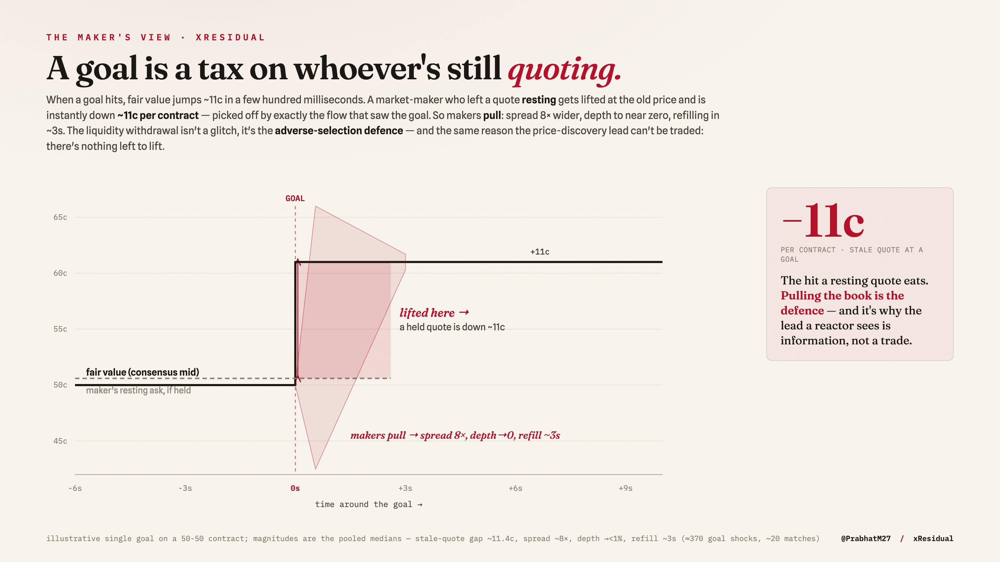

Kalshi (US-regulated) and Polymarket (crypto-native) quote the same World Cup outcomes through very different microstructure — different fee and tick regimes, user bases, and settlement. That makes the pair a natural laboratory for cross-venue price discovery: when new information arrives, which venue moves first, and which merely follows?
A 2026 study of the Polymarket order book [1] maps that venue's microstructure in detail but states plainly that a cross-venue comparison against Kalshi — the price-discovery question — is left for future work. This note answers it for a clean, repeated, exogenous information event: goals in the 2026 World Cup. I form no strong prior on direction and let the data decide.
I capture both venues' full level-2 order books and every trade over WebSocket, at tick resolution, from an always-on collector running 24/7 through the tournament. For each match I pair contracts that reference the identical outcome (one Kalshi ticker and one Polymarket token per team and the draw), de-vig each venue's quotes to probabilities, and align the two mid-price series on a common clock. The event study runs on 72 matches, OFI on 72 matches, and the information-share estimates (below) on the 51 cointegrated matches (83 contracts) whose cross-venue spread passes the ADF guard (all as of 3 July).
I measure the same phenomenon three ways, at increasing rigor, so the conclusion does not rest on any single technique.
I detect repricing shocks (goals) on each venue's mid series and cross-correlate the two around each event to estimate which venue's mid moves first, to the millisecond. Intuitive, but timing in a sub-second window is noisy.
The two de-vigged mids for one outcome are cointegrated with the natural vector (1,−1): arbitrage keeps their difference stationary. I test that with an Augmented Dickey–Fuller test and discard any contract that fails (on a non-cointegrated pair the shares are a spurious-regression artifact). On the survivors I fit a bivariate vector error-correction model and report the Hasbrouck [3] information-share bounds and the ordering-free Gonzalo–Granger [4] permanent-component share. The intuition: the venue that adjusts less to the spread (the smaller error-correction coefficient) is the one others converge toward — the price-discovery leader.
I reconstruct order-flow imbalance (OFI) from top-of-book changes [5] and test (i) whether OFI moves each venue's own price — the canonical within-venue result — and (ii) whether one venue's flow predicts the other's next move. I also recompute the lead on the imbalance-weighted microprice [6] rather than the mid.
The winner market is efficient. As a control, the de-vigged outright-winner prices agree across venues (and with a calibrated model) to within ~0.4 pp. There is no cross-venue mispricing in the liquid market; the effect below is about speed of discovery, not a level disagreement.
And where they do differ, Polymarket sits closer to the sharp line. Benchmarking each venue's de-vigged title price against the sharp bookmaker line across 48 teams, Polymarket's mean absolute gap to the sharp line is 0.18 pp versus Kalshi's 0.26 pp, and Polymarket is the closer of the two on 22 teams to Kalshi's 11. So the venue that updates first is also the one sitting closest to the sharpest available consensus: here, leadership and level accuracy coincide — a mild counterpoint to the “leadership need not mean efficiency” caution raised for 2024 US-election markets.
| Measure | Sample | Result |
|---|---|---|
| Reaction lead (event study) | 72 matches, 308 events | Polymarket first in 226, Kalshi in 82 (73%), median +400 ms (IQR [0, +800]) |
| Reaction lead, per match (cluster-robust) | 56 matches | 48 of 56 lean Polymarket (sign-test p ≈ 5×10-8; design effect 1.21) |
| Gonzalo–Granger share | 51 cointeg. matches | Polymarket ~79%, leads in 50 / 51 (p ≈ 5×10-14) |
| Hasbrouck share (band) | 83 contracts | Polymarket band ~73–90% |
| Distance to sharp line (bookmaker) | 48 teams | Polymarket 0.18 pp vs Kalshi 0.26 pp; Poly closer on 22 / 11 |
| OFI → own-venue price impact | 40 matches | strong within-venue, both directions (bin-level t; see §6) |
| OFI cross-venue lead | 40 matches | null — no clean asymmetry either direction |
All three methods point the same way: Polymarket leads. The mechanism check sharpens the interpretation — order flow clearly drives price within each venue (textbook [5]), but there is no cross-venue flow lead. The lead therefore lives in the price, not in observable flow: Polymarket's mid simply updates to new information first.
The results above are pooled over each match. Conditioning on the actual information event — a goal — turns the single ~79% into a dynamic picture, and answers the question any price leader should be asked: is the lead a tradable edge?
| Measure (per goal) | Sample | Result |
|---|---|---|
| Information share, event-conditional | ~20 matches | Polymarket GG ~86% in goal windows vs ~53% in calm play (Hasbrouck ~82% vs ~56%) |
| Liquidity at the goal (top of book) | ~370 shocks | spread ~8× (Poly) / ~2× (Kalshi); best-price depth falls to <1% of normal; refill ~3–4 s |
| Harvestability of the lead | 277 goals | gross stale gap ~12.0c, net +10.8c on paper after spread — but 0% harvestable once gated on available depth |
| Reaction size vs fair value | 8 clean matches | market books ~0.55× the model's fair log-odds jump; under-shoots in 7 of 8 matches — an under-reaction (preliminary) |
Discovery concentrates at the news. Away from goals the two venues are near-coequal (~53/47); the instant a goal lands, Polymarket carries ~86% of the permanent price move. The flagship lead is not a steady background hum but a news-event phenomenon — Polymarket leads precisely because it incorporates the goal first.
And the same venue withdraws liquidity the hardest. At the goal, makers pull their quotes: the spread blows out (~8× on Polymarket, ~2× on Kalshi) and best-price depth collapses to under 1% of normal, refilling only after a few seconds. Unlike a betting exchange — Betfair suspends and cancels resting orders on a goal (Croxson & Reade 2014) — Kalshi and Polymarket never halt, so this is informational liquidity withdrawal, not a mechanical suspension.
So the lead is real but untradeable. A naive ledger makes the stale follower look like free money: ~12.0c of staleness, +10.8c net of the spread, on every goal. But that quote has vanished — depth at the goal is ~0.5% of normal — so once gated on what is actually resting in the book, 0% is harvestable. "The news is in the price before you can trade it" (Croxson & Reade 2014) holds here for a precise, measured reason: not slow pricing, but a book that empties in the same instant it reprices. (An earlier version of this ledger reported the +10.8c as harvestable; gating on depth corrected it, and that correction is the result.)
And it under-reacts to the goal it just priced. Conditioning the same event on a fair-value benchmark — a calibrated clock-and-Poisson model anchored to the pre-match price — the market's post-goal move is a median ~0.55× the model's fair jump in log-odds (so this is not the logistic curve flattering the result; the raw-probability "value of a goal" curve and an apparent "underdog goals move twice as far" both dissolve once that geometry is removed, and I do not claim them). The market under-shoots the fair move in 7 of 8 cleanly-reconstructed matches, and the move sticks (60-second reversion ~0), so it is a persistent under-reaction rather than an overshoot. A decisive check rules out the alternative — that my benchmark merely over-reacts: the model's larger post-goal probability is the better forecast of the eventual result (log-loss 0.235 vs 0.361; Brier 0.073 vs 0.113), so the larger jump was warranted. I report this as suggestive, not firm — the cluster-honest unit is the match, and 7 of 8 is a sign-test p ≈ 0.07; on the wider sample that includes shock-inferred goal times the direction holds (24 of 27 matches) but the outcome test muddies, which is why I trust only the clean-reconstruction subset. It should sharpen as the knockouts add cleanly-timed goals.
Immune to the trade-direction problem. [1] shows that trade direction inferred from Polymarket's public feed agrees with on-chain ground truth only ~59% of the time, which corrupts any signed-trade measure (effective spread, Kyle's λ, trade-sign OFI). Every estimate here is computed on mid-quote moves and book changes, not signed trades, so it is unaffected; I verified our signed-flow code is used by none of these results.
No spurious shares. The ADF gate drops non-cointegrated pairs, so a Hasbrouck/GG number is only reported where the (1,−1) spread is genuinely stationary.
Significance, stated honestly. Goal events cluster within matches and are not independent, so the naive binomial
(p≈0.0004) and bin-level OFI t-statistics overstate significance. The unit that carries the claim is the match:
50 of 51 cointegrated matches show a Polymarket lead, with a ~79% central share. That match-clustered bootstrap is now run
(scripts/harden_leadlag_stats.py): the clustering is mild (ICC 0.058, design effect 1.21), the reaction-lead 95%
CI holds at [68%, 79%], and the per-match sign-tests are decisive — 48 of 56 matches lean Polymarket on the
reaction lead (p≈5×10-8) and 50 of 51 on the information share (p≈5×10-14).
The qualitative result is not in doubt.
Not a trade. The lead is a few hundred milliseconds. Documented cross-venue arbitrage exists (~$40M, 2024–25) but is seconds-lived and fee-bounded; a 400 ms head start vanishes inside the bid–ask once costs are crossed. This is price-discovery leadership, a property of market structure — not free money.
Scope. One tournament, one sport, a ~three-week window, 51 cointegrated matches. Polymarket's documented wash trading (~25% of historical volume) is a caveat on volume-based measures, less so on mids. The Hasbrouck band is wide where the two venues' innovations are correlated, which is why I lead with the ordering-free Gonzalo–Granger number.
The within-venue OFI→price relation reproduces Cont–Kukanov–Stoikov [5]; the microprice's edge over the mid follows Stoikov [6]; the information-share machinery is Hasbrouck [3] and Gonzalo–Granger [4]; an independent 2025 study finds a Polymarket discovery lead in other markets [2], which this corroborates — but where [2] reads that lead as “economically meaningful arbitrage,” the depth-gated ledger here qualifies it: on a clean repeated-event stream the lead is real, yet the book withdraws in the same instant it reprices, so the stale-quote gap is ~0% harvestable and the arbitrage is not economically meaningful net of the cost of immediacy. The contribution is, to my knowledge, the first cross-venue Kalshi–Polymarket information-share estimate at tick resolution on a clean, repeated event stream (goals), robust to the trade-direction problem [1], paired with a depth-gated harvestability test that separates a real price-discovery lead from a tradable one.
On identical World Cup outcomes, Polymarket discovers price first: it reacts ~400 ms sooner and carries ~79% of the permanent price movement, in 50 of 51 cointegrated matches measured. The practical implication is narrow but real — an aggregator of prediction-market signals should weight Polymarket's mid as the leading indicator and Kalshi's as the lagging confirm — and the trading implication is honestly none, after costs. Everything is reproducible from the public repository; forecasts in the wider project are committed to a forward-only ledger, and the core estimation math is frozen, so none of this is fit after the fact.